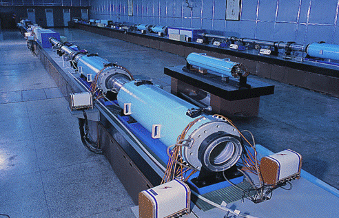

【海军】看不见的军备竞赛：战术雷射
2015-01-14 17:08:00
原文网址：https://blog.udn.com/MengyuanWang/108908691
共军自1990年代开始积极发展先进武器，到现在已经对美国的军事霸权构成了威胁。但是从技术层次来说，除了反舰弹道飞弹之外，共军近年的新装备还只相当于美军10到30年前就已部署的武器；也就是说，共军总体来看，还处在追赶的态势。其实飞机、坦克、导弹这些早已成熟的设计，美军有几十年的先发优势，在精益求精的细节上，自然有难以复制的独到心得。但是在还未实用化的科幻武器上，共军就享有同时自起跑线出发的好处，因此竞争就更为激烈。不过双方对这些新武器，保密都非常严密，而且美军还进一步散发各式各様的烟幕消息，企图困惑对手。其结果是外界对这些武器的印象被严重误导，媒体上的报导也就比传统武器更加离谱。我想在此澄清一些常见的误解。
目前最常听到的科幻武器有两种：电磁炮和雷射。前者作为新式的战舰主炮，被美国海军大肆宣扬，在2009年的电影《变形金刚2》里，甚至成了打败霸天虎（Decepticons）的利器。这是一个典型的美式忽悠：暂且不论目前的电磁炮本身在技术和性能上的缺陷，超高速弹丸在海平面附近的浓密大气层里，速度损失极快，再加上精度受气流影响很大，射程因而严重受限。这种物理上的先天缺陷，是无法用工程上的努力来弥补的；再花20年的大笔投资，或许20公里的有效射程（即可以精确而且即时命中的射程）有可能达成，100公里则是永远都做不到的（必须使用高抛物线弹道以减低空气阻力损耗，所以需时三分钟以上，与衝压飞弹相比没有优势；由于受气流影响和目标机动，必须进行复杂的全程制导，在费用上接近飞弹，却完全没有后者飞行轨迹的可编程能力；弹丸太小，即使有多发命中，动能加火药仍然不足以重创2000吨以上的舰只）。而现代海战的交战距离，已经达到了1000公里，正在向2000公里推进。所以美军宣传电磁炮的用意，只能是希望忽悠共军浪费财力物力在这个完全没有前途的项目上。
另一项科幻武器，雷射，则的确有实用的可能，而且还不只一方面。首先，战略雷射是打撃低飞的军事侦察卫星的理想手段：反应快、耗费低，而且很难被确认责任。中美双方都已大量投资在这个方向，甚至有谣传已有实战部署。不过这类的战略武器，太过敏感，消息很不可靠，我对它也没有特别深入的见解，所以在此我们先看看雷射在战术层次上的应用。最近常被报导的战术雷射，主要是美国海军和陆军准备用来替换近防炮的几个项目，亦即用雷射来撃毁敌方的飞机、导弹、无人机和快艇。由于雷射在民用领域的应用极为广泛，高功率或高能量的雷射早已研发完成，一般人把纸面上的数据做了比较后，常以为民转军的过程会是很直接简单的。其实军用战术雷射的附属部件，如电源和瞄准用的光学器材，反而是没有太大难度的部分；真正的难关恰是在雷射本身。
为什么现有的民用大功率、高能量雷射不适用于战术目的呢？民用和军用最基本的差别有两个：1）战术雷射必须在户外有各种天象的浓密大气层里，打撃几公里外的目标；2）战术雷射必须在交战几秒内，完成重启的周期，重新投入作战。前一个要求排除了高能量的工业用切割雷射，因为如果要保证能撃毁超音速反舰飞弹，必须在一秒锺之内传送十万焦耳的热能，也就是持续功率必须到达十万瓦并且维持一秒左右。满足这个要求的工业雷射是有的，但是它用的是连续波，在几公里的射程里会被水蒸汽吸收而使空气受热膨胀，產生透镜效应，使光束失焦，结果终端强度不足以摧毁反舰飞弹的。中美两国的战术雷射都因此而改用脉衝雷射；当脉衝长度在一微秒以内时，空气没有足够的时间来膨胀，透镜效应不明显。好玩的是，美国因为开始研究战术雷射比中共早些，因而在1970年代的预研时期，大家都还在用连续波雷射的时候，美国放弃了波长较长（10.6微米的中红外线）的二氧化碳雷射，而专注在波长较短（1.064微米的近红外线）的铷玻璃雷射（Nd:YAG Laser，后来演化成光纤雷射）上。近红外线穿透水蒸汽的能力强些，在当时似乎是最好的选择，但是后来大家都改用高功率脉衝雷射之后，透镜效应被解决，而吸收效应的直接损耗并不严重，结果是美国的新锐固态光纤雷射在对大气层的穿透力上的优势，不足以弥补共军的老式气相雷射在效率上的领先。
水的三相对红外线的吸收率。绿线是水蒸汽，10.6微米约相当于0.1的吸收率，1.064微米则为0.001级别的，差别为两个数量级；不过10.6微米和1.064微米都处在吸收率曲线的谷底，这并不是巧合，而是二氧化碳雷射和铷玻璃雷射被选为军用雷射源的主因。至于气体对红外线的吸收则恰是近年来很常上新闻的温室效应，水蒸汽是极强的温室气体，对红外线热辐射的吸收能力比二氧化碳还要强得多。
经过几十年的努力，中美两方都有了满足功率需求的雷射发生器和电源供应，能持续锁定高速目标一秒以上的光学部件也完成开发，目前最大的技术难关在于散热。反舰飞弹的标准战术应用模式是在短时间内投入多枚飞弹以图超越近防系统的反应容量，也就是所谓的饱和打撃。因此近防系统极重要的一个性能指标是必须能快速重启，对后续的入袭飞弹持续射撃摧毁。不幸的是雷射的能量转换效率天生就很低，大部分的能量都变成热量而必须被快速散发。光纤和美军也在尝试的薄片雷射，在散热上都比前一代的固态雷射强，但是十万焦耳的出力标准实在太高，10秒内完成散热的时段实在太短，以致工程设计一延再延，原本十万瓦原型机应该在2007年建成的时限早已过去，而2014年出现的几个试范原型仍只有一万瓦功率。共军选用的气相雷射反而在这方面有先天的优势，不但效率高、產热少，而且可以靠气体流动来大幅增加散热的有效面积，因此共军虽然在1980年代和1990年代早期经过了军费紧缩的停滞时期，仍然能快速追上美军在战术雷射上的新发展。我的猜测是在2020年之前，中美双方都将完成十万焦耳级的战术雷射原型机，到2030年可能成为新军舰的标准装备。
由于雷射的专业程度高，中美双方的媒体在相关的报导上，都常常会有甚为离谱的猜测。在美方，主要是轻信美军的乐观宣传，以致在过去十年里，每年都热情地报导了“新”的一万焦耳原型机，和“两三年后即将完成”的十万焦耳雷射。在中方，共军的传统是不置评论，结果是网民把一切官方公布的有关雷射技术的突破都解释为军用，其实刚好相反，它们无一例外都是民用的技术。例如“神光”系列的高能量雷射，基本上是中共版的NIF（National Ignition Facility，这是以高能雷射来启动核融合的科学实験，美国版已经证明为不折不扣的大灾难，被讥笑为National Almost Ignition Facility，简写为NAIF，而英文的naif是天真无知的意思），能量虽高，却完全没有散热上的考虑，而且是单脉衝，瞬间功率很惊人，持续功率却不够满足军事上的要求。上个月，中共的中科院上海光机所强场激光物理国家重点实验室宣布建成Petawatt雷射（1PW=一千万亿瓦），是10Petawatt雷射的先期工程，网络上也立即爆出与战术雷射的联想。其实这个Petawatt雷射是将神光系统的单脉衝长度进一步压缩到32fs（femto-second，一千万亿分之一秒）的成果，总能量输出只有45焦耳，还不够打穿我的外套。它的用途是把物质表面以极高速剥离，藉此来研究高能物理和核子物理，是一项基础科研的项目。美国最早建成Petawatt雷射，目前英国也有活跃的研究。10Petawatt的雷射是下一代的目标（再下一代是200PW），欧洲（即位于捷克的ELI计划，Extreme Light Infrastructure）和中国都在开发，鹿死谁手还很难说。
上海光机所的神光二型雷射，和美国的NIF类似。现在NIF已经悲惨地死亡，神光的前途也有了大大的问号。
【后注一】本文的旧版有些技术细节是错的，在此感谢雷射专家黄崇博博士不吝指正。
【后注二】中共负责PW雷射的李儒新博士（网页在这里：http://www.casad.cas.cn/document.action?docid=12917）在本月11日的演讲中，宣称上海光机所已经达到4PW的功率，暂时领先世界。不过他认为10PW雷射的主要应用仍是在核融合上，这可能是太过乐观了。因为NIF的“中心点火”设计遭遇了“非线性”损失（Non-linear Loss，物理专门名词，用浅显的话说就是“我们没有预期到的莫名其妙问题”），有人建议改用“快点火”设计。“快点火”设计需要的是高瞬间功率而不是极高的总能量，那么他的10PW雷射就刚好是最合适的。不过“快点火”目前还只是个概念，会不会有用还很难说。
【后注三】2015年三月5日，Lockheed Martin宣布成功试射30KW的Athena雷射。Athena仍然是基于铷光纤的设计。
1 条留言
udn.com/news/story/6809/1730174-
美「电磁炮」上膛-中、俄剉咧等